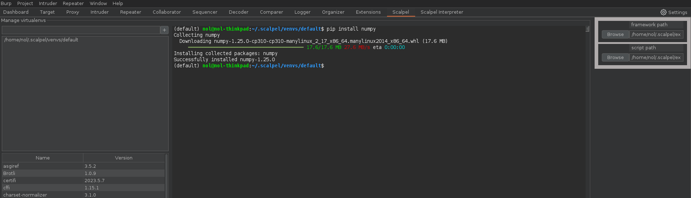
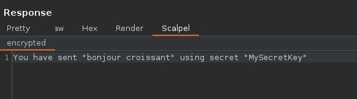

const{urlencoded}=require("express");constapp=require("express")();app.use(urlencoded({extended: true}));constcrypto=require("crypto");constderive=(secret)=>{consthasher=crypto.createHash("sha256");hasher.update(secret);constderived_aes_key=hasher.digest().slice(0,32);returnderived_aes_key;};constget_cipher_decrypt=(secret,iv=Buffer.alloc(16,0))=>{constderived_aes_key=derive(secret);constcipher=crypto.createDecipheriv("aes-256-cbc",derived_aes_key,iv);returncipher;};constget_cipher_encrypt=(secret,iv=Buffer.alloc(16,0))=>{constderived_aes_key=derive(secret);constcipher=crypto.createCipheriv("aes-256-cbc",derived_aes_key,iv);returncipher;};constdecrypt=(secret,data)=>{constdecipher=get_cipher_decrypt(secret);letdecrypted=decipher.update(data,"base64","utf8");decrypted+=decipher.final("utf8");returndecrypted;};constencrypt=(secret,data)=>{constcipher=get_cipher_encrypt(secret);letencrypted=cipher.update(data,"utf8","base64");encrypted+=cipher.final("base64");returnencrypted;};app.post("/encrypt",(req,res)=>{constsecret=req.body["secret"];constdata=req.body["encrypted"];if(data===undefined){res.send("No content");return;}constdecrypted=decrypt(secret,data);constresContent=`You have sent "${decrypted}" using secret "${secret}"`;constencrypted=encrypt(secret,resContent);res.send(encrypted);});app.listen(3000,["localhost"]);
As we can see, every request content is encrypted using AES using a secret passed alongside the content and the response is encrypted using the same provided secret.
With Burp vanilla, it would make editing the request very tedious (using “copy to file”), and when faced against a case like this, people will either work with custom scripts outside of Burp, use tools like mitmproxy, write their own Burp Extension in Java for this specific use case (which is slow) or give up.
Scalpel’s main goal and reason to exist is to make working around such cases trivial.
To work with AES in Python, we need the pycryptodome module, which isn’t installed by default.
All Scalpel python scripts run in a virtual env, and Scalpel provides a way to switch venvs and install packages through Burp GUI.
Let’s jump to the “Scalpel” tab:

On the left, you can see UI you can use to create and select new venvs.
Let’s create a venv for this use case by entering a name and pressing enter:
We can now select our venv by clicking on it:
The central terminal is now activated in the selected venv and can be used to install packages using pip in the usual way:
We now have pycryptodome installed and we’re ready to create our scalpel script.
Now, after loading this script with Scalpel and opening such an encrypted request in Burp, you should see a “Scalpel” tab along the “Pretty”, “Raw”, and “Hex” tabs:
Right-now, the additional tab is uneditable as it has no way to encrypt the content back. To do so, we need to implement the req_edit_out hook.
The req_edit_out simply has to implement the inverse effect of req_edit_in, which means:
When present, the req_edit_out suffix has to match the req_edit_in suffix (here: _encrypted)
By adding this hook, you should now be able to edit the plain text and it will automatically be encrypted using the hook you just implemented.
Now, we would like to be able to decrypt the response to see if our changes were reflected.
The process is basically the same:
defres_edit_in_encrypted(res:Response)->bytes|None:secret=res.request.form[b"secret"]encrypted=res.contentifnotencrypted:returnb""returndecrypt(secret,encrypted)# This is used to edit the response received by the browser in the proxy, but is useless in Repeater/Logger.defres_edit_out_encrypted(res:Response,text:bytes)->Response:secret=res.request.form[b"secret"]res.content=encrypt(secret,text)returnres

You can now edit the responses received by the browser as well.
Scalpel provides a match() hook to filter unwanted requests from being treated by your hooks.
In this case, the encrypted requests are only sent to the /encrypt path and contains a secret, so we shouldn’t try to decrypt traffic that do not match this.
The above match hook receives a Flow object, it contains a request, and, when treating a response, it contains both the response and its initiating request.
It ensures the initiating request contained a secret field and was sent to a path matching /encrypt*
In this tutorial, we’ve taken a look at how to decrypt a custom encryption in IoT appliance communications using Scalpel.
This involved understanding the existing API encryption code, recreating the encryption process in Python, installing necessary Python dependencies, and creating custom editors to handle decryption and re-encryption of modified content.
We implemented this process for both request and response flows, allowing us to view and manipulate the plaintext communication, then re-encrypt it before sending. This approach considerably simplifies the process of analyzing and interacting with encrypted data, reducing the need for cumbersome workarounds or additional external tools.
Remember, although we’ve used a specific case of AES-256-CBC encryption in this tutorial, the general principle and steps can be applied to various other encryption techniques as well. The main requirement is to understand the encryption process and be able to reproduce it in Python.
Scalpel is meant to be a versatile tool in scenarios where we encounter custom encryption, making it easier to analyze and modify such encrypted data for security testing purposes.